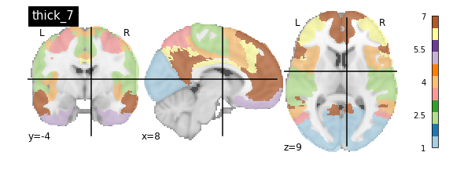
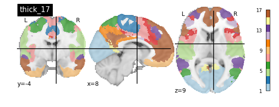
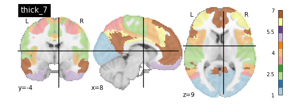
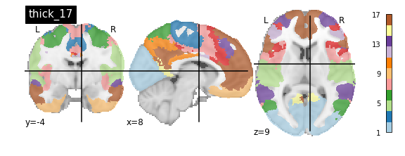

Content from Course Overview and Introduction
Last updated on 2024-02-17 | Edit this page
Estimated time: 25 minutes
This document is based on the slides here Google Slides
Functional Neuroimaging in Python
Welcome to the Functional Neuroimaging Analysis in Python workshop! In this workshpo we’ll get you up to speed with the current tools and techniques used in the analysis of functional MRI (fMRI) data. The primary goals of this workshop are:
- Understand how neuroimaging data is stored, and how it helps us perform analysis
- Gain familiarity with the issues surrounding the analysis of fMRI data, and how we can combat it in pre-processing and analysis
- Learn how to analyze neuroimaging data, working from beginning to end
- Get comfortable with Python as a tool for analysis and visualization of data
The Central Objective
This workshop is designed to teach you the basics and work up to performing an intra-network functional connectivity analysis of the Default Mode Network in individuals with Schizophrenia and compare them to a Control population.
All of this sounds fancy, but we’ll explain in depth what this looks like in practice as the course goes along.
A breakdown of material
The material covered will be:
- Preprocessing fMRI data
- Exploring fMRIPrep preprocessing pipeline outputs using pyBIDS
- Introduction to Nilearn and Image manipulation
- Integrating functional time-series data
- Parcellating your data
- Confound cleaning fMRI time-series signals
- Functional Connectivity Analysis
Pre-processing
You’re a researcher who’s collected some nice MR images, and put in some work organizing your data into a BIDS dataset. Now you’re rarin’ to go and want to play with some data and get some science done. However, fMRI data is messy, there are a ton of issues that you need to overcome before you can even begin to analyze your data, this is called pre-processing. Here are some of the issues:
- We have whole head images, we just want the brain
- Your fMRI image and T1 (anatomical) image are not aligned with each other
- Your fMRI image is distorted due to changing magnetic fields in some areas of the brain
- People move, the fMRI image is misaligned through time
- Movement influences the fMRI signal itself! We want brain signals not motion signals
- All subject images aren’t aligned with each other, and furthermore have different brain shapes and sizes. How can we perform a group analysis (i.e averaging etc..) if all our samples are different from one another? We need to normalize our data
This seems like a lot of problems to deal with… A pictoral guide of what dealing with these problems looks like follows below:
Visual Guide to Pre-processing T1 images
First we’ll want to deal with our structural data; this is called the T1 image. Preprocessing the T1 image consists of the following steps:
- Brain extraction - we want to analyze brains, not skulls
- Normalization - since brains are different across people, we need a method to make them look more alike so we can perform group analysis. This is achieved using a non-linear warp which squishes and pulls the brain to look like a template image

Visual Guide to Pre-processing fMRI data
With fMRI data things are a bit more complicated since you have to deal with:
- Motion across time
- Distortion artifacts due to magnetic field inhomogeneities
The following steps are required (at minimum!):
- Brain extraction - again we’re only interested in the brain
- Motion correction - we need to align the fMRI data across time
- Susceptibility Distortion Correction (SDC) - we need to correct for magnetic field inhomogeneities
- Alignment to the T1 image - aligning to the T1 image allows us to perform the *squishy/pully” normalization to make everyone’s brain more alike
- Confound regression - not only does motion misalign brains it also corrupts the signal with motion signal artifacts, this also needs to be cleaned!
So how does one begin to even accomplish this? Traditionally, neuroimagers used a plethora of tools like, but not limited to: FSL, AFNI, FREESURFER, ANTS, SPM. Each with their own quirks and file format requirements.
Unfortunately this is difficult to navigate, and each tool develops new techniques to better peform each of these pre-processing steps. Luckily, if your data is in a BIDS Format, there exists a tool, fMRIPrep, which does this all for you while using the best methods across most of these tools!. An image below from their website depicts the processing steps they use:

Ultimately, fMRIPrep is an end-to-end pipeline - meaning that you feed it your raw organized data and it’ll produce a bunch of outputs that you can use for analysis! What follows below are explanations of what those outputs are:
fMRIPrep anatomical outputs

Native Space
- sub-xxxxx_T1w_brainmask.nii - a binary mask which can be used to pull out just the brain
- sub-xxxxx_T1w_preproc.nii - the fully cleaned T1 image which has not been normalized
MNI (Normalized) Space
- sub-xxxxx_T1w_space-MNI152NLin2009cAsym_brainmask.nii.gz - also a brain mask, but warped to fit a template brain (the template is MNI152NLin2009cAsym)
- sub-xxxxx_T1w_space-MNI152NLin2009cAsym_class-(CSF/GM/WM)_probtissue.nii.gz - probability values for each of the tissue types. We won’t get into too much detail with this one
- sub-xxxxx_T1w_space-MNI152NLin2009cAsym_preproc..nii - the cleaned up T1 image that has been squished and warped into the MNI152NLin2009cAsym template space
fMRIPrep functional outputs

As above we have both Native and Normalized versions of the fMRI brain, we have a mask of each one as well as the preprocessed fMRI brain.
Note: These have not been cleaned of motion artifacts. They have only been aligned, distortion corrected, and skull-stripped.
fMRIPrep also outputs a sub-xxxxx_task-…_confounds.tsv tab-delimited spreadsheet which contains a set of nuisance regressors that you can use to clean the signal itself of motion artifacts. We’ll explore this in a later section.
End
In the next section we’ll start exploring the outputs generated by fMRIPrep to get a better handle of how to use them to manipulate images, clean motion signals, and perform analysis!
Content from Exploring Preprocessed fMRI Data from fMRIPREP
Last updated on 2024-02-17 | Edit this page
Estimated time: 25 minutes
Overview
Questions
- How does fMRIPrep store preprocessed neuroimaging data
- How do I access preprocessed neuroimaging data
Objectives
- Learn about fMRIPrep derivatives
- Understand how preprocessed data is stored and how you can access key files for analysis
Exploring Preprocessed fMRI Data from fMRIPREP
BIDS applications such as fMRIPREP output data into a full data structure with strong similarity to BIDS organization principals. In fact, there is a specification for derivatives (outputs derived from) BIDS datasets; although this is a current work in progress, details can be found in: BIDS Derivatives.
In this tutorial, we’ll explore the outputs generated by fMRIPREP and get a handle of how the data is organized from this preprocessing pipeline
Luckily the semi-standardized output for fMRIPrep is organized in such a way that the data is easily accessible using pyBIDS! We’ll first show what the full data structure looks like, then we will provide you with methods on how you can pull specific types of outputs using pyBIDS.
The fMRIPrep Derivative Data Structure
First let’s take a quick look at the fMRIPrep data structure:
OUTPUT
../data/ds000030/derivatives/fmriprep/
├── sub-10171
├── sub-10292
├── sub-10365
├── sub-10438
├── sub-10565
├── sub-10788
├── sub-11106
├── sub-11108
├── sub-11122
├── sub-11131
├── sub-50010
├── sub-50035
├── sub-50047
├── sub-50048
├── sub-50052
├── sub-50067
├── sub-50075
├── sub-50077
├── sub-50081
└── sub-50083First note that inside the fMRIPrep folder, we have a folder per-subject. Let’s take a quick look at a single subject folder:
OUTPUT
../data/ds000030/derivatives/fmriprep/sub-10788/
├── anat
│ ├── sub-10788_desc-aparcaseg_dseg.nii.gz
│ ├── sub-10788_desc-aseg_dseg.nii.gz
│ ├── sub-10788_desc-brain_mask.json
│ ├── sub-10788_desc-brain_mask.nii.gz
│ ├── sub-10788_desc-preproc_T1w.json
│ ├── sub-10788_desc-preproc_T1w.nii.gz
│ ├── sub-10788_dseg.nii.gz
│ ├── sub-10788_from-fsnative_to-T1w_mode-image_xfm.txt
│ ├── sub-10788_from-T1w_to-fsnative_mode-image_xfm.txt
│ ├── sub-10788_label-CSF_probseg.nii.gz
│ ├── sub-10788_label-GM_probseg.nii.gz
│ ├── sub-10788_label-WM_probseg.nii.gz
│ ├── sub-10788_space-MNI152NLin2009cAsym_desc-brain_mask.json
│ ├── sub-10788_space-MNI152NLin2009cAsym_desc-brain_mask.nii.gz
│ ├── sub-10788_space-MNI152NLin2009cAsym_desc-preproc_T1w.json
│ ├── sub-10788_space-MNI152NLin2009cAsym_desc-preproc_T1w.nii.gz
│ ├── sub-10788_space-MNI152NLin2009cAsym_dseg.nii.gz
│ ├── sub-10788_space-MNI152NLin2009cAsym_label-CSF_probseg.nii.gz
│ ├── sub-10788_space-MNI152NLin2009cAsym_label-GM_probseg.nii.gz
│ └── sub-10788_space-MNI152NLin2009cAsym_label-WM_probseg.nii.gz
├── func
│ ├── sub-10788_task-rest_desc-confounds_timeseries.json
│ ├── sub-10788_task-rest_desc-confounds_timeseries.tsv
│ ├── sub-10788_task-rest_from-scanner_to-T1w_mode-image_xfm.txt
│ ├── sub-10788_task-rest_from-T1w_to-scanner_mode-image_xfm.txt
│ ├── sub-10788_task-rest_space-MNI152NLin2009cAsym_boldref.nii.gz
│ ├── sub-10788_task-rest_space-MNI152NLin2009cAsym_desc-aparcaseg_dseg.nii.gz
│ ├── sub-10788_task-rest_space-MNI152NLin2009cAsym_desc-aseg_dseg.nii.gz
│ ├── sub-10788_task-rest_space-MNI152NLin2009cAsym_desc-brain_mask.json
│ ├── sub-10788_task-rest_space-MNI152NLin2009cAsym_desc-brain_mask.nii.gz
│ ├── sub-10788_task-rest_space-MNI152NLin2009cAsym_desc-preproc_bold.json
│ ├── sub-10788_task-rest_space-MNI152NLin2009cAsym_desc-preproc_bold.nii.gz
│ ├── sub-10788_task-rest_space-T1w_boldref.nii.gz
│ ├── sub-10788_task-rest_space-T1w_desc-aparcaseg_dseg.nii.gz
│ ├── sub-10788_task-rest_space-T1w_desc-aseg_dseg.nii.gz
│ ├── sub-10788_task-rest_space-T1w_desc-brain_mask.json
│ ├── sub-10788_task-rest_space-T1w_desc-brain_mask.nii.gz
│ ├── sub-10788_task-rest_space-T1w_desc-preproc_bold.json
│ └── sub-10788_task-rest_space-T1w_desc-preproc_bold.nii.gz
...As you can see above, each subject folder is organized into an
anat and func sub-folder.
Specifically:
- the
anatfolder contains the preprocessed anatomical data. If multiple T1 files are available (all T1s even across sessions), then these data are merged - you will always have oneanatfolder under the subject folder - the
funcfolder contains the preprocessed functional data. All tasks are dumped into the same folder and like the BIDS convention are indicated by the use of their filenames (task-[task_here])
Hopefully you’re now convinced that the outputs of fMRIPREP roughly follows BIDS organization principles. The filenames themselves give you a full description of what each file is (check the slides to get an idea of what each file means!
Now let’s see how we can pull data in using pyBIDS!
Let’s import pyBIDS through the bids module first:
We can make a bids.BIDSLayout object as usual by just
feeding in the fmriprep directory! However, there is one caveat… note
that fMRIPrep doesn’t exactly adhere to the standard BIDS
convention. It uses fields such as desc- which are not
part of the original BIDS specification. I.e:
In fact, BIDS allows for extensions which enable you to add
additional fields to the standard BIDS convention (such as
desc-!). fMRIprep uses the derivatives
extension of the BIDS standard. pyBIDS can handle standard extensions to
the BIDS specification quite easily:
PYTHON
layout = bids.BIDSLayout('../data/ds000030/derivatives/fmriprep/', config=['bids','derivatives'])Now that we have a layout object, we can pretend like we’re working with a BIDS dataset! Let’s try some common commands that you would’ve used with a BIDS dataset:
First, we’ll demonstrate that we can grab a list of pre-processed subjects much like in the way we would grab subjects from a raw BIDS dataset:
OUTPUT
['10171',
'10292',
'10365',
'10438',
'10565',
'10788',
'11106',
'11108',
'11122',
'11131',
'50010',
'50035',
'50047',
'50048',
'50052',
'50067',
'50075',
'50077',
'50081',
'50083']We can also do the same for tasks
OUTPUT
['rest']Now let’s try fetching specific files. Similar to how you would fetch BIDS data using pyBIDS, the exact same syntax will work for fMRIPREP derivatives. Let’s try pulling just the preprocessed anatomical data.
Recall that the anatomical folder is organized as follows:
OUTPUT
../data/ds000030/derivatives/fmriprep/sub-10788/anat
├── sub-10788_desc-aparcaseg_dseg.nii.gz
├── sub-10788_desc-aseg_dseg.nii.gz
├── sub-10788_desc-brain_mask.json
├── sub-10788_desc-brain_mask.nii.gz
├── sub-10788_desc-preproc_T1w.json
├── sub-10788_desc-preproc_T1w.nii.gz
├── sub-10788_dseg.nii.gz
├── sub-10788_from-fsnative_to-T1w_mode-image_xfm.txt
├── sub-10788_from-T1w_to-fsnative_mode-image_xfm.txt
├── sub-10788_label-CSF_probseg.nii.gz
├── sub-10788_label-GM_probseg.nii.gz
├── sub-10788_label-WM_probseg.nii.gz
├── sub-10788_space-MNI152NLin2009cAsym_desc-brain_mask.json
├── sub-10788_space-MNI152NLin2009cAsym_desc-brain_mask.nii.gz
├── sub-10788_space-MNI152NLin2009cAsym_desc-preproc_T1w.json
├── sub-10788_space-MNI152NLin2009cAsym_desc-preproc_T1w.nii.gz
├── sub-10788_space-MNI152NLin2009cAsym_dseg.nii.gz
├── sub-10788_space-MNI152NLin2009cAsym_label-CSF_probseg.nii.gz
├── sub-10788_space-MNI152NLin2009cAsym_label-GM_probseg.nii.gz
└── sub-10788_space-MNI152NLin2009cAsym_label-WM_probseg.nii.gz
0 directories, 20 filesThe file that we’re interested in is of form
sub-[subject]_desc-preproc_T1w.nii.gz. Now we can construct
a pyBIDS call to pull these types of files specifically:
OUTPUT
[<BIDSImageFile filename='/home/jerry/projects/workshops/SDC-BIDS-fMRI/data/ds000030/derivatives/fmriprep/sub-10438/anat/sub-10438_desc-preproc_T1w.nii.gz'>,
<BIDSImageFile filename='/home/jerry/projects/workshops/SDC-BIDS-fMRI/data/ds000030/derivatives/fmriprep/sub-10438/anat/sub-10438_space-MNI152NLin2009cAsym_desc-preproc_T1w.nii.gz'>,
<BIDSImageFile filename='/home/jerry/projects/workshops/SDC-BIDS-fMRI/data/ds000030/derivatives/fmriprep/sub-10788/anat/sub-10788_desc-preproc_T1w.nii.gz'>,
<BIDSImageFile filename='/home/jerry/projects/workshops/SDC-BIDS-fMRI/data/ds000030/derivatives/fmriprep/sub-10788/anat/sub-10788_space-MNI152NLin2009cAsym_desc-preproc_T1w.nii.gz'>,Note that we also pulled in MNI152NLin2009cAsym_preproc.nii.gz data
as well. This is data that has been transformed into MNI152NLin2009cAsym
template space. We can pull this data out by further specifying our
layout.get using the space argument:
PYTHON
mni_preproc_T1 = layout.get(datatype='anat',desc='preproc',extension='.nii.gz',space='MNI152NLin2009cAsym')
mni_preproc_T1OUTPUT
[<BIDSImageFile filename='/home/jerry/projects/workshops/SDC-BIDS-fMRI/data/ds000030/derivatives/fmriprep/sub-10438/anat/sub-10438_space-MNI152NLin2009cAsym_desc-preproc_T1w.nii.gz'>,
<BIDSImageFile filename='/home/jerry/projects/workshops/SDC-BIDS-fMRI/data/ds000030/derivatives/fmriprep/sub-10788/anat/sub-10788_space-MNI152NLin2009cAsym_desc-preproc_T1w.nii.gz'>,
...What if we wanted to pull out the data in T1 “native space” (it
really is a template space, since it is merged T1s)? Unfortunately for
this isn’t directly possible using layout.get. Instead
we’ll use a bit of python magic to pull the data that we want:
Similarily fMRI data can be pulled by specifying
datatype=‘func’ and using the desc argument as
appropriate:
Exercise 1
- Get the list of all preprocessed functional data
- Get the list of functional data in MNI152NLin2009cAsym space
- Get the list of functional data in T1w space (native) Note that T1
space fMRI data can be pulled using
space=“T1w”(this is unlike the T1w data which required you to do some filtering)
Now that we have a handle on how fMRIPREP preprocessed data is organized and how we can pull this data. Let’s start working with the actual data itself!
Content from Introduction to Image Manipulation using Nilearn
Last updated on 2024-02-17 | Edit this page
Estimated time: 45 minutes
Overview
Questions
- How can be perform arithmetic operations on MR images
Objectives
- Use Nilearn to perform masking and mathematical operations
- Learn how to resample across modalities for image viewing and manipulation
Introduction
Nilearn is a functional neuroimaging analysis and visualization library that wraps up a whole bunch of high-level operations (machine learning, statistical analysis, data cleaning, etc…) in easy-to-use commands. The neat thing about Nilearn is that it implements Nibabel under the hood. What this means is that everything you do in Nilearn can be represented by performing a set of operations on Nibabel objects. This has the important consequence of allowing you, yourself to perform high-level operations (like resampling) using Nilearn then dropping into Nibabel for more custom data processing then jumping back up to Nilearn for interactive image viewing. Pretty cool!
Setting up
The first thing we’ll do is to important some Python modules that will allow us to use Nilearn:
PYTHON
import os
import matplotlib.pyplot as plt
from nilearn import image as nimg
from nilearn import plotting as nplot
from bids import BIDSLayout
#for inline visualization in jupyter notebook
%matplotlib inline Notice that we imported two things:
-
image as nimg- allows us to load NIFTI images using nibabel under the hood -
plotting as nplot- allows us to using Nilearn’s plotting library for easy visualization
First let’s grab some data from where we downloaded our
FMRIPREP outputs. Note that we’re using the argument
return_type=‘file’ so that pyBIDS gives us file paths
directly rather than the standard BIDSFile objects
PYTHON
#Base directory for fmriprep output
fmriprep_dir = '../data/ds000030/derivatives/fmriprep/'
layout= BIDSLayout(fmriprep_dir, config=['bids','derivatives'])
T1w_files = layout.get(subject='10788', datatype='anat',
desc='preproc', extension='.nii.gz',
return_type='file')
brainmask_files = layout.get(subject='10788', datatype='anat', suffix="mask",
desc='brain', extension='.nii.gz',
return_type='file')Here we used pyBIDS (as introduced in earlier sections) to pull a single participant. Specifically, we pulled all preprocessed (MNI152NLin2009cAsym, and T1w) anatomical files as well as their respective masks. Let’s quickly view these files for review:
OUTPUT
['/home/jerry/projects/workshops/SDC-BIDS-fMRI/data/ds000030/derivatives/fmriprep/sub-10788/anat/sub-10788_desc-preproc_T1w.nii.gz',
'/home/jerry/projects/workshops/SDC-BIDS-fMRI/data/ds000030/derivatives/fmriprep/sub-10788/anat/sub-10788_space-MNI152NLin2009cAsym_desc-preproc_T1w.nii.gz']Now that we have our files set up, let’s start performing some basic image operations.
Basic Image Operations
In this section we’re going to deal with the following files:
-
sub-10171_desc-preproc_T1w.nii.gz- the T1 image in native space -
sub-10171_desc-brain_mask.nii.gz- a mask with 1’s representing the brain and 0’s elsewhere.
PYTHON
t1 = T1w_files[0]
bm = brainmask_files[0]
t1_img = nimg.load_img(t1)
bm_img = nimg.load_img(bm)Using the plotting module (which we’ve aliased as
nplot), we can view our MR image:
This gives just a still image of the brain. We can also view the
brain more interactively using the view_img function. It
will require some additional settings however:
PYTHON
nplot.view_img(t1_img,
bg_img=False, # Disable using a standard image as the background
cmap='Greys_r', # Set color scale so white matter appears lighter than grey
symmetric_cmap=False, # We don't have negative values
threshold="auto", # Clears out the background
)Try clicking and dragging the image in each of the views that are generated!
Try viewing the mask as well!
Arithmetic Operations
Let’s start performing some image operations. The simplest operations we can perform is element-wise, what this means is that we want to perform some sort of mathematical operation on each voxel of the MR image. Since voxels are represented in a 3D array, this is equivalent to performing an operation on each element (i,j,k) of a 3D array. Let’s try inverting the image, that is, flip the colour scale such that all blacks appear white and vice-versa. To do this, we’ll use the method
nimg.math_img(formula, **imgs) Where:
-
formulais a mathematical expression such as'a+1' -
**imgsis a set of key-value pairs linking variable names to images. For examplea=T1
In order to invert the image, we can simply flip the sign which will set the most positive elements (white) to the most negatve elements (black), and the least positives elements (black) to the least negative elements (white). This effectively flips the colour-scale:

Alternatively we don’t need to first load in our
t1_imgusingimg.load_img. Instead we can feed in a path toimg.math_img:
Applying a Mask
Let’s extend this idea of applying operations to each element of an image to multiple images. Instead of specifying just one image like the following:
nimg.math_img('a+1',a=img_a)
We can specify multiple images by tacking on additional variables:
nimg.math_img('a+b', a=img_a, b=img_b)
The key requirement here is that when dealing with multiple images,
that the size of the images must be the same. The reason being
is that we’re deaing with element-wise operations. That
means that some voxel (i,j,k) in img_a is being paired with
some voxel (i,j,k) in img_b when performing operations. So
every voxel in img_a must have some pair with a voxel in
img_b; sizes must be the same.
We can take advantage of this property when masking our data using
multiplication. Masking works by multipling a raw image (our
T1), with some mask image (our bm). Whichever
voxel (i,j,k) has a value of 0 in the mask multiplies with voxel (i,j,k)
in the raw image resulting in a product of 0. Conversely, any voxel
(i,j,k) in the mask with a value of 1 multiplies with voxel (i,j,k) in
the raw image resulting in the same value. Let’s try this out in
practice and see what the result is:

As you can see areas where the mask image had a value of 1 were retained, everything else was set to 0
Exercise #1
Try applying the mask such that the brain is removed, but the rest of the head is intact! Hint: Remember that a mask is composed of 0’s and 1’s, where parts of the data labelled 1 are regions to keep, and parts of the data that are 0, are to throw away. You can do this in 2 steps:
- Switch the 0’s and 1’s using an equation (simple addition/substraction) or condition (like x == 0).
- Apply the mask

Slicing
Recall that our data matrix is organized in the following manner:

Slicing does exactly what it seems to imply. Given our 3D volume, we can pull out 2D subsets (called “slices”). Here’s an example of slicing moving from left to right via an animated GIF:

What you see here is a series of 2D images that start from the left, and move toward the right. Each frame of this GIF is a slice - a 2D subset of a 3D volume. Slicing can be useful for cases in which you’d want to loop through each MR slice and perform a computation; importantly in functional imaging data slicing is useful for pulling out timepoints as we’ll see later!
Slicing is done easily on an image file using the attribute
.slicer of a Nilearn image object. For example
we can grab the \(10^{\text{th}}\)
slice along the x axis as follows:
The statement \(10:11\) is
intentional and is required by .slicer. Alternatively we
can slice along the x-axis using the data matrix itself:
This will yield the same result as above. Notice that when using the
t1_data array we can just specify which slice to grab
instead of using :. We can use slicing in order to modify
visualizations. For example, when viewing the T1 image, we may want to
specify at which slice we’d like to view the image. This can be done by
specifying which coordinates to cut the image at:
The cut_coords option specifies 3 numbers:
- The first number says cut the X coordinate at slice 50 and display (sagittal view in this case!)
- The second number says cut the Y coordinate at slice 30 and display (coronal view)
- The third number says cut the Z coordinate at slice 20 and display (axial view)
Remember nplot.plot_anat yields 3 images, therefore
cut_coords allows you to display where to take
cross-sections of the brain from different perspectives (axial,
sagittal, coronal)
This covers the basics of image manipulation using T1 images. To review in this section we covered:
- Basic image arithmetic
- Visualization
- Slicing
In the next section we will cover how to integrate additional
modalities (functional data) to what we’ve done so far using
Nilearn. Then we can start using what we’ve learned in
order to perform analysis and visualization!
Content from Integrating Functional Data
Last updated on 2024-02-17 | Edit this page
Estimated time: 45 minutes
Overview
Questions
- How is fMRI data represented
- How can we access fMRI data along spatial and temporal dimensions
- How can we integrate fMRI and structural MRI together
Objectives
- Extend the idea of slicing to 4 dimensions
- Apply resampling to T1 images to combine them with fMRI data
Integrating Functional Data
So far most of our work has been examining anatomical images - the
reason being is that it provides a nice visual way of exploring the
effects of data manipulation and visualization is easy. In practice, you
will most likely not analyze anatomical data using nilearn
since there are other tools that are better suited for that kind of
analysis (freesurfer, connectome-workbench, mindboggle, etc…).
In this notebook we’ll finally start working with functional MR data
- the modality of interest in this workshop. First we’ll cover some
basics about how the data is organized (similar to T1s but slightly more
complex), and then how we can integrate our anatomical and functional
data together using tools provided by nilearn
Functional data consists of full 3D brain volumes that are sampled at multiple time points. Therefore you have a sequence of 3D brain volumes, stepping through sequences is stepping through time and therefore time is our 4th dimension! Here’s a visualization to make this concept more clear:
Each index along the 4th dimensions (called TR for “Repetition Time”, or Sample) is a full 3D scan of the brain. Pulling out volumes from 4-dimensional images is similar to that of 3-dimensional images except you’re now dealing with:
nimg.slicer[x,y,z,time] !
Let’s try a couple of examples to familiarize ourselves with dealing with 4D images. But first, let’s pull some functional data using PyBIDS!
PYTHON
import os
import matplotlib.pyplot as plt #to enable plotting within notebook
from nilearn import image as nimg
from nilearn import plotting as nplot
from bids.layout import BIDSLayout
import numpy as np
%matplotlib inlineThese are the usual imports. Let’s now pull some structural and functional data using pyBIDS.
We’ll be using functional files in MNI space rather than T1w space. Recall, that MNI space data is data that was been warped into standard space. These are the files you would typically use for a group-level functional imaging analysis!
PYTHON
fmriprep_dir = '../data/ds000030/derivatives/fmriprep/'
layout=BIDSLayout(fmriprep_dir, validate=False,
config=['bids','derivatives'])
T1w_files = layout.get(subject='10788',
datatype='anat', desc='preproc',
space='MNI152NLin2009cAsym',
extension="nii.gz",
return_type='file')
brainmask_files = layout.get(subject='10788',
datatype='anat', suffix='mask',
desc='brain',
space='MNI152NLin2009cAsym',
extension="nii.gz",
return_type='file')
func_files = layout.get(subject='10788',
datatype='func', desc='preproc',
space='MNI152NLin2009cAsym',
extension="nii.gz",
return_type='file')
func_mask_files = layout.get(subject='10788',
datatype='func', suffix='mask',
desc='brain',
space='MNI152NLin2009cAsym',
extension="nii.gz",
return_type='file')fMRI Dimensions
First note that fMRI data contains both spatial dimensions (x,y,z) and a temporal dimension (t). This would mean that we require 4 dimensions in order to represent our data. Let’s take a look at the shape of our data matrix to confirm this intuition:
OUTPUT
(65, 77, 49, 152)Notice that the Functional MR scan contains 4 dimensions. This is in the form of \((x,y,z,t)\), where \(t\) is time. We can use slicer as usual where instead of using 3 dimensions we use 4.
For example:
func.slicer[x,y,z]
vs.
func.slicer[x,y,z,t]
You may also use nplot.plot_epi. plot_epi
is exactly the same as plot_anat except it displays using
colors that make more sense for functional images…
What fMRI actually represents
We’ve represented fMRI as a snapshot of MR signal over multiple
timepoints. This is a useful way of understanding the organization of
fMRI, however it isn’t typically how we think about the data when we
analyze fMRI data. fMRI is typically thought of as
time-series data. We can think of each voxel (x,y,z
coordinate) as having a time-series of length T. The length T represents
the number of volumes/timepoints in the data. Let’s pick an example
voxel and examine its time-series using
func_mni_img.slicer:
PYTHON
#Pick one voxel at coordinate (60,45,88)
single_vox = func_mni_img.slicer[59:60,45:46,30:31,:].get_data()
single_vox.shapeOUTPUT
(1, 1, 1, 152)As you can see we have 1 element in (x,y,z) dimension representing a single voxel. In addition, we have 152 elements in the fourth dimension. In totality, this means we have a single voxel with 152 timepoints. Dealing with 4 dimensional arrays are difficult to work with - since we have a single element across the first 3 dimensions we can squish this down to a 1 dimensional array with 152 time-points. We no longer need the first 3 spatial dimensions since we’re only looking at one voxel and don’t need (x,y,z) anymore:
OUTPUT
(152,)Here we’ve pulled out a voxel at a specific coordinate at every single time-point. This voxel has a single value for each timepoint and therefore is a time-series. We can visualize this time-series signal by using a standard python plotting library. We won’t go into too much detail about python plotting, the intuition about what the data looks like is what is most important:
First let’s import the standard python plotting library
matplotlib:
PYTHON
# Make an array counting from 0 --> 152, this will be our x-axis
x_axis = np.arange(0, single_vox.shape[0])
# Plot our x and y data, the 'k' just specifies the line color to be black
plt.plot( x_axis, single_vox, 'k')
# Label our axes
plt.xlabel('Timepoint')
plt.ylabel('Signal Value')
As you can see from the image above, fMRI data really is just a signal per voxel over time!
Resampling
Recall from our introductory exploration of neuroimaging data:
- T1 images are typically composed of voxels that are 1x1x1 in dimension
- Functional images are typically composed of voxels that are 4x4x4 in dimension
If we’d like to overlay our functional on top of our T1 (for visualization purposes, or analyses), then we need to match the size of the voxels!
Think of this like trying to overlay a 10x10 JPEG and a 20x20 JPEG on top of each other. To get perfect overlay we need to resize (or more accurately resample) our JPEGs to match!
Let’s resampling some MRI data using nilearn.
Goal: Match the dimensions of the structural image to that of the functional image
PYTHON
# Files we'll be using (Notice that we're using _space-MNI...
# which means they are normalized brains)
T1_mni = T1w_files[0]
T1_mni_img = nimg.load_img(T1_mni)Let’s take a quick look at the sizes of both our functional and structural files:
OUTPUT
(193, 229, 193)
(60, 77, 49, 152)Taking a look at the spatial dimensions (first three dimensions), we can see that the number of voxels in the T1 image does not match that of the fMRI image. This is because the fMRI data (which has less voxels) is a lower resolution image. We either need to upsample our fMRI image to match that of the T1 image, or we need to downsample our T1 image to match that of the fMRI image. Typically, since the fMRI data is the one we’d like to ultimately use for analysis, we would leave it alone and downsample our T1 image. The reason being is that resampling requires interpolating values which may contaminate our data with artifacts. We don’t mind having artifacts in our T1 data (for visualization purposes) since the fMRI data is the one actually being analyzed.
Resampling in nilearn is as easy as telling it which image you want to sample and what the target image is.
Structure of function:
nimg.resample_to_img(source_img,target_img,interpolation)
-
source_img= the image you want to sample -
target_img= the image you wish to resample to -
interpolation= the method of interpolation
Callout
A note on interpolation nilearn supports 3 types of interpolation, the one you’ll use depends on the type of data you’re resampling!
- continuous - Interpolate but maintain some edge features. Ideal for structural images where edges are well-defined. Uses \(3^\\text{rd}\)-order spline interpolation.
- linear (default) - Interpolate uses a combination of neighbouring voxels - will blur. Uses trilinear interpolation.
- nearest - matches value of closest voxel (majority vote from neighbours). This is ideal for masks which are binary since it will preserve the 0’s and 1’s and will not produce in-between values (ex: 0.342). Also ideal for numeric labels where values are 0,1,2,3… (parcellations). Uses nearest-neighbours interpolation with majority vote.
PYTHON
#Try playing around with methods of interpolation
#options: 'linear','continuous','nearest'
resamp_t1 = nimg.resample_to_img(source_img=T1_mni_img,target_img=func_mni_img,interpolation='continuous')
print(resamp_t1.shape)
print(func_mni_img.shape)
nplot.plot_anat(resamp_t1)
Now that we’ve explored the idea of resampling let’s do a cumulative exercise bringing together ideas from resampling and basic image operations.
Exercise
Using Native T1 and T1w resting state functional do the following:
- Resample the T1 image to resting state size
- Replace the brain in the T1 image with the first frame of the resting state brain
Files we’ll need
Functional Files
PYTHON
#This is the pre-processed resting state data that hasn't been standardized
ex_func = nimg.load_img(func_files[0])
#This is the associated mask for the resting state image.
ex_func_bm = nimg.load_img(func_mask_files[0])The first step is to remove the brain from the T1 image so that we’re left with a hollow skull. This can be broken down into 2 steps:
- Invert the mask so that all 1’s become 0’s and all 0’s become 1’s

- Apply the mask onto the T1 image, this will effectively remove the brain
PYTHON
# Apply the mask onto the T1 image
hollow_skull = nimg.math_img("??", a=??, b=??)
nplot.plot_anat(??)
Our brain is now missing!
Next we need to resize the hollow skull image to the dimensions of our resting state image. This can be done using resampling as we’ve done earlier in this episode.
What kind of interpolation would we need to perform here? Recall that:
- Continuous: Tries to maintain the edges of the image
- Linear: Resizes the image but also blurs it a bit
- Nearest: Sets values to the closest neighbouring values
PYTHON
#Resample the T1 to the size of the functional image!
resamp_skull = nimg.resample_to_img(source_img=??,
target_img=??,
interpolation='??')
nplot.plot_anat(resamp_skull)
print(resamp_skull.shape)
print(ex_func.shape)
We now have a skull missing the structural T1 brain that is resized to match the dimensions of the EPI image.
The final steps are to:
- Pull the first volume from the functional image
- Place the functional image head into the hollow skull that we’ve created
Since a functional image is 4-Dimensional, we’ll need to pull the first volume to work with. This is because the structural image is 3-dimensional and operations will fail if we try to mix 3D and 4D data.
PYTHON
#Let's visualize the first volume of the functional image:
first_vol = ex_func.slicer[??, ??, ??, ??]
nplot.plot_epi(first_vol)
As shown in the figure above, the image has some “signal” outside of the brain. In order to place this within the now brainless head we made earlier, we need to mask out the functional MR data as well!
PYTHON
#Mask the first volume using ex_func_bm
masked_func = nimg.math_img('??', a=??, b=??)
nplot.plot_epi(masked_func)
The final step is to stick this data into the head of the T1 data. Since the hole in the T1 data is represented as \(0\)’s. We can add the two images together to place the functional data into the void:
PYTHON
#Now overlay the functional image on top of the anatomical
combined_img = nimg.math_img(??)
nplot.plot_anat(combined_img)
PYTHON
# Invert the mask
invert_mask = nimg.math_img('1-a', a=ex_t1_bm)
nplot.plot_anat(invert_mask)
# Apply the mask onto the T1 image
hollow_skull = nimg.math_img("a*b", a=ex_t1, b=invert_mask)
nplot.plot_anat(hollow_skull)
#Resample the T1 to the size of the functional image!
resamp_skull = nimg.resample_to_img(source_img=hollow_skull,
target_img=ex_func,
interpolation='continuous')
nplot.plot_anat(resamp_skull)
print(resamp_skull.shape)
print(ex_func.shape)
#Let's visualize the first volume of the functional image:
first_vol = ex_func.slicer[:,:,:,0]
nplot.plot_epi(first_vol)
masked_func = nimg.math_img('a*b', a=first_vol, b=ex_func_bm)
nplot.plot_epi(masked_func)
#Now overlay the functional image on top of the anatomical
combined_img = nimg.math_img('a+b',
a=resamp_skull,
b=masked_func)
nplot.plot_anat(combined_img)This doesn’t actually achieve anything useful in practice. However it has hopefully served to get you more comfortable with the idea of resampling and performing manipulations on MRI data!
In this section we explored functional MR imaging. Specifically we covered:
- How the data in a fMRI scan is organized - with the additional dimension of timepoints
- How we can integrate functional MR images to our structural image using resampling
- How we can just as easily manipulate functional images using
nilearn
Now that we’ve covered all the basics, it’s time to start working on data processing using the tools that we’ve picked up.
Content from Cleaning Confounders in your Data with Nilearn
Last updated on 2024-02-17 | Edit this page
Estimated time: 30 minutes
Overview
Questions
- How can we clean the data so that it more closely reflects BOLD instead of artifacts
Objectives
- Understand the motivation behind confound/nuisance regression
- Learn how to implement cleaning using nilearn and fmriprep
Introduction
Movement is the enemy of Neuroimagers
Movement is an important problem that we need to deal with in our data. In resting state fMRI movement can induce false correlations between brain regions leading to inaccurate conclusions about brain connectivity. However, there is a unique problem that resting state fMRI faces when dealing with movement:
- In resting state fMRI, we don’t actually ever see the true underlying BOLD signal.
This is un-like task-based fMRI where there is an expectation that we’ll observe a BOLD signal upon event onset - we have some information about what the true underlying BOLD signal might look like. In order to deal with the problem of movement in resting state fMRI we need to model our fMRI signal to be comprised of true brain signal and motion (confounder) signals. We can make estimates about how motion can influence our data then remove it from the recorded signal; the leftover signal is what we estimate the BOLD signal to be.
This process of removing motion-based artifacts from our data is called confound regression, which is essentially fitting a linear model using motion estimates as regressors then subtracting it out from the signal. Hopefully in this process we get a closer estimate of what the actual brain-induced BOLD signal looks like.
In this section we’ll implement confound regression for resting-state data using nilearn’s high-level functionality.
Setting up
Let’s load in some modules as we’ve done before
PYTHON
import os
from nilearn import image as nimg
from nilearn import plotting as nplot
import matplotlib.pyplot as plt
import numpy as np
import nibabel as nib
%matplotlib inlineSetting up our Motion Estimates
The beauty of FMRIPREP is that it estimates a number of motion-related signals for you and outputs it into:
sub-xxxx_task-xxxx_desc-confounds_timeseries.tsv
This is basically a spreadsheet that has columns related to each
motion estimate type and rows for timepoints. We can view these using a
language-python package called pandas.
Let’s pick an fMRI file to clean and pull out the confound tsv that FMRIPREP computed for us:
PYTHON
import bids # assuming pip install pybids was covered earlier
sub = '10788'
fmriprep_dir = '../data/ds000030/derivatives/fmriprep/'
layout = bids.BIDSLayout(fmriprep_dir,validate=False,
config=['bids','derivatives'])PYTHON
func_files = layout.get(subject=sub,
datatype='func', task='rest',
desc='preproc',
space='MNI152NLin2009cAsym',
extension='nii.gz',
return_type='file')
mask_files = layout.get(subject=sub,
datatype='func', task='rest',
desc='brain',
suffix='mask',
space='MNI152NLin2009cAsym',
extension="nii.gz",
return_type='file')
confound_files = layout.get(subject=sub,
datatype='func', task='rest',
desc='confounds',
extension="tsv",
return_type='file')Using pandas we can read in the confounds.tsv file as a
spreadsheet and display some rows:
PYTHON
#Delimiter is \t --> tsv is a tab-separated spreadsheet
confound_df = pd.read_csv(confound_file, delimiter='\t')
print(f"Read {len(confound_df.columns)} confounder items, each {len(confound_df)} TRs.")
print(confound_df.head)Each column in this DataFrame confound_df represents a
specific confound variable that is either estimated directly from head
motion during the functional scan or other noise characteristics that
may capture noise (non grey-matter signal for example). Each row
represents values from a TR/sample. So the number of rows in your
confound_df should match the number of TRs you have in the
functional MR data.
Picking your Confounds
The choice of which confounds to use in functional imaging analysis is a source of large debate. We recommend that you check out these sources for a start:
- https://www.sciencedirect.com/science/article/pii/S1053811917302288#f0005
- https://www.sciencedirect.com/science/article/pii/S1053811917302288 For now we’re going to replicate the pre-processing (mostly) from the seminal Yeo1000 17-networks paper: https://www.ncbi.nlm.nih.gov/pubmed/21653723
The Yeo 2011 Pre-processing schema
Confound regressors
- 6 motion parameters (trans_x, trans_y, trans_z, rot_x, rot_y, rot_z)
- Global signal (global_signal)
- Cerebral spinal fluid signal (csf)
- White matter signal (white_matter)
This is a total of 9 base confound regressor variables. Finally we add temporal derivatives of each of these signals as well (1 temporal derivative for each), the result is 18 confound regressors.
Temporal Derivatives are the changes in values across 2 consecutive samples. It represents change in signal over time. For example, when dealing with the confound variable “X”, which represents motion along the “trans_x” direction, the temporal derivative represents velocity in the X direction.
Low/High pass filtering
- Low pass filtering cutoff: 0.08
- High pass filtering cutoff: 0.009
Low pass filters out high frequency signals from our data. fMRI signals are slow evolving processes, any high frequency signals are likely due to noise High pass filters out any very low frequency signals (below 0.009Hz), which may be due to intrinsic scanner instabilities
Drop dummy TRs
During the initial stages of a functional scan there is a strong signal decay artifact, thus the first 4ish or so TRs are very high intensity signals that don’t reflect the rest of the scan. Therefore we drop these timepoints.
Censoring + Interpolation (leaving out)
Censoring involves removal and interpolation of high-movement frames from the fMRI data. Interpolation is typically done using sophisticated algorithms much like Power et al. 2014.
We won’t be using censoring + interpolation since its fairly complicated and would take up too much time
Setting up Confound variables for regression
Computing temporal derivatives for confound variables
First we’ll select our confound variables from our dataframe. You can do this by specifying a list of confounds, then using that list to pull out the associated columns
PYTHON
# Select confounds
confound_vars = ['trans_x','trans_y','trans_z',
'rot_x','rot_y','rot_z',
'global_signal',
'csf', 'white_matter']Next we need to get derivatives for each of these columns. Luckily fMRIPrep provides this for us. Derivative columns are denoted as the following:
- {NAME_OF_COLUMN}_derivative1
Since typing is alot of work, we’ll use a for-loop instead to pick
the derivatives for our confound_vars:
PYTHON
# Get derivative column names
derivative_columns = ['{}_derivative1'.format(c) for c
in confound_vars]
print(derivative_columns)Now we’ll join these two lists together:
Finally we’ll use this list to pick columns from our confounds table
Dummy TR Drop
Now we’ll implement our Dummy TR Drop. Remember this means that we are removing the first 4 timepoints from our functional image (we’ll also have to do this for our first 4 confound timepoints!):
PYTHON
#First we'll load in our data and check the shape
raw_func_img = nimg.load_img(func_file)
raw_func_img.shapeRecall that the fourth dimension represents frames/TRs(timepoints). We want to drop the first four timepoints entirely, to do so we use nibabel’s slicer feature. We’ll also drop the first 4 confound variable timepoints to match the functional scan
OUTPUT
(65, 77, 49, 148)Applying confound regression
Now we’d like to clean our data of our selected confound variables. There are two ways to go about this:
- If you have nilearn version 0.5.0 or higher use
nilearn.image.clean_img(image,confounds,…) - If you want full control over specific parts of the image you’re
cleaning use
nilearn.signal.clean(signals,confounds,…)
The first method is probably most practical and can be done in one line given what we’ve already set-up. However, in cases of very large datasets (HCP-style), the second method might be preferable for optimizing memory usage.
First note that both methods take an argument confounds.
This is a matrix:

Therefore our goal is to take our confound matrix and work it into a matrix of the form above. The end goal is a matrix with 147 rows, and columns matching the number of confound variables (9x2=18)
Luckily this is a one-liner!
PYTHON
confounds_matrix = drop_confound_df.values
#Confirm matrix size is correct
confounds_matrix.shapeLet’s clean our image!
Using nilearn.image.clean_img
First we’ll describe a couple of this function’s important arguments. Any argument enclosed in [arg] is optional
nilearn.image.clean_img(image,confounds,[low_pass],[high_pass],[t_r],[mask_img],[detrend],[standardize])
Required:
-
image: The functional image (func_img) -
confounds: The confound matrix (confounds)
Optional:
-
low_pass: A low pass filter cut-off -
high_passA high pass filter cut-off -
t_r: This is required if using low/high pass, the repetition time of acquisition (imaging metadata) -
mask_imgApply a mask when performing confound regression, will speed up regression -
detrend: Remove drift from the data (useful for removing scanner instability artifacts) [default=True] -
standardize: Set mean to 0, and variance to 1 –> sets up data for statistical analysis [default=True]
What we’re using:
The Repetition Time of our data is 2 seconds, in addition since we’re replicating (mostly) Yeo 2011’s analysis:
- high_pass = 0.009
- low_pass = 0.08
- detrend = True
- standardize = True
In addition we’ll use a mask of our MNI transformed functional image
( mask ) to speed up cleaning
PYTHON
#Set some constants
high_pass= 0.009
low_pass = 0.08
t_r = 2
#Clean!
clean_img = nimg.clean_img(func_img,confounds=confounds_matrix,detrend=True,standardize=True,
low_pass=low_pass,high_pass=high_pass,t_r=t_r, mask_img=mask_file)
#Let's visualize our result! Doesn't really tell us much, but that's the data we're using for analysis!
nplot.plot_epi(clean_img.slicer[:,:,:,50])
before_figure = nplot.plot_carpet(clean_img, mask, t_r=t_r)
after_figure = nplot.plot_carpet(func_img, mask, t_r=t_r)Done!
Hopefully by now you’ve learned what confound regression is, and how to perform it in nilearn using 2 different methods. We’d like to note that there are many more methods to perform confound regression (simultaneous signal extraction + confound regression for example) but all those methods fundamentally rely on what you’ve done here.
In addition, performing confound regression on functional volumes, is also not the only way to do data cleaning. More modern methods involve applying confound regression on functional surfaces, however, those methods are too advanced for an introductory course to functional data analysis and involve tools outside of python.
If you’re interested in surface-based analysis we recommend that you check out the following sources:
- https://edickie.github.io/ciftify/#/
- https://www.humanconnectome.org/software/connectome-workbench
- The minimal preprocessing pipelines for the Human Connectome Project
The section below is optional and is a more advanced
dive into the underlying mechanics of how nilearn.clean_img
works:
Content from Applying Parcellations to Resting State Data
Last updated on 2024-02-17 | Edit this page
Estimated time: 40 minutes
Overview
Questions
- How can we reduce amount of noise-related variance in our data?
- How can we frame our data as a set of meaningful features?
Objectives
- Learn about the utility of parcellations as a data dimensionalty reduction tool
- Understand what the tradeoffs are when using parcellations to analyze your data
Introduction
What is a Brain Atlas or Parcellation?
A brain atlas/parcellation is a voxel-based labelling of your data into “structural or functional units”. In a parcellation schema each voxel is assigned a numeric (integer) label corresponding to the structural/functional unit that the particular voxel is thought to belong to based on some criteria. You might wonder why someone would simply average together a bunch of voxels in a way that would reduce the richness of the data. This boils down to a few problems inherit to functional brain imaging:
- Resting state data is noisy, averaging groups of “similar” voxels reduces the effect of random noise effects
- Provide an interpretative framework to functional imaging data. For example one parcellation group might be defined as the Default Mode Network which is thought to be functionally significant. So averaging voxels together belonging to the Default Mode Network provides an average estimate of the Default Mode Network signal. In addition the discovery of the Default Mode Network has yielded important insights into the organizational principles of the brain.
- Limit the number of statistical tests thereby reducing potential Type I errors without resorting to strong statistical correction techniques that might reduce statistical power.
- A simpler way to visualize your data, instead of 40x40x40=6400 data points, you might have 17 or up to 200; this is still significantly less data to deal with!
Applying a Parcellation to your Data
Since the parcellation of a brain is defined (currently) by spatial locations, application of an parcellation to fMRI data only concerns the first 3 dimensions; the last dimension (time) is retained. Thus a parcellation assigns every voxel (x,y,z) to a particular parcel ID (an integer).
Nilearn supports a large selection of different atlases that can be found here. For information about how to select which parcellation to use for analysis of your data we refer you to Arslan et al. 2018.
Retrieving the Atlas
For this tutorial we’ll be using a set of parcellation from Yeo et al. 2011. This atlas was generated from fMRI data from 1000 healthy control participants.
First we’ll load in our packages as usual:
PYTHON
from nilearn import datasets
from nilearn import image as nimg
from nilearn import plotting as nplot
%matplotlib inlineTo retrieve the Yeo atlas we’ll use the fetch_atlas_*
family of functions provided for by nilearn.datasets and download it
into a local directory:
The method datasets.fetch_atlas_yeo_2011() returns a
dict object. Examining the keys of the dictionary yields
the following:
Each of the values associated with a key in
atlas_yeo_2011 is a .nii.gz image which
contains a 3D NIFTI volume with a label for a given (x,y,z) voxel. Since
these images are 3D volumes (sort of like structural images), we can
view them using nilearn’s plotting utilities:
PYTHON
#Define where to slice the image
cut_coords(8, -4, 9)
#Show a colorbar
colorbar=True
#Color scheme to show when viewing image
cmap='Paired'
#Plot all parcellation schemas referred to by atlas_yeo_2011
nplot.plot_roi(atlas_yeo_2011['thin_7'], cut_coords=cut_coords, colorbar=colorbar, cmap=cmap, title='thin_7')
nplot.plot_roi(atlas_yeo_2011['thin_17'], cut_coords=cut_coords, colorbar=colorbar, cmap=cmap, title='thin_17')
nplot.plot_roi(atlas_yeo_2011['thick_7'], cut_coords=cut_coords, colorbar=colorbar, cmap=cmap, title='thick_7')
nplot.plot_roi(atlas_yeo_2011['thick_17'], cut_coords=cut_coords, colorbar=colorbar, cmap=cmap, title='thick_17')
 

You’ll notice that the colour bar on the right shows the number of labels in each atlas and which colour corresponds to which network
The 7 and 17 network parcellations correspond to the two most stable clustering solutions from the algorithm used by the authors. The thin/thick designation refer to how strict the voxel inclusion is (thick might include white matter/CSF, thin might exclude some regions of grey matter due to partial voluming effects).
For simplicity we’ll use the thick_7 variation which includes the following networks:
- Visual
- Somatosensory
- Dorsal Attention
- Ventral Attention
- Limbic
- Frontoparietal
- Default
The parcel areas labelled with 0 are background voxels not associated with a particular network.
Spatial Separation of Network
A key feature of the Yeo2011 networks is that they are spatially distributed, meaning that the locations of two voxels in the same network need not be part of the same region. However, there could be some cases in which you might want to examine voxels belonging to a network within a particular region. To do this, we can separate parcels belonging to the same network based on spatial continuity. If there is a gap between two sets of voxels belonging to the same parcel group, we can assign new labels to separate them out. Nilearn has a feature to handle this:
PYTHON
from nilearn.regions import connected_label_regions
region_labels = connected_label_regions(atlas_yeo)
nplot.plot_roi(region_labels,
cut_coords=(-20,-10,0,10,20,30,40,50,60,70),
display_mode='z',
colorbar=True,
cmap='Paired',
title='Relabeled Yeo Atlas')
Resampling the Atlas
Let’s store the separated version of the atlas into a NIFTI file so that we can work with it later:
PYTHON
region_labels.to_filename('../resources/rois/yeo_2011/Yeo_JNeurophysiol11_MNI152/relabeled_yeo_atlas.nii.gz')Resampling Exercise
Our goal is to match the parcellation atlas dimensions to our
functional file so that we can use it to extract the mean time series of
each parcel region. Using Nilearn’s resampling capabilities
match the dimensions of the atlas file to the functional file First
let’s pick our functional file. Atlases are typically defined in
standard space so we will use the MNI152NLin2009cAsym version of the
functional file:
PYTHON
func_file = '../data/ds000030/derivatives/fmriprep/sub-10788/func/sub-10788_task-rest_bold_space-MNI152NLin2009cAsym_preproc.nii.gz'
func_img = nib.load(func_file)First examine the size of both files, if they match we are done:
Looks like they don’t match. To resolve this, we can use
nimg.resample_to_img to resize the atlas image to
match that of the functional image. Think about what kind of
interpolation we’d like to use. Recall that the atlas contains integer
values (i.e 0, 1, 2, 3,…), we do not want any in-between
values!
Let’s see what the resampled atlas looks like overlayed on a slice of our NifTI file
PYTHON
# Note that we're pulling a random timepoint from the fMRI data
nplot.plot_roi(resampled_yeo, func_img.slicer[:, :, :, 54])
Visualizing ROIs
For the next section, we’ll be performing an analysis using the Yeo parcellation on our functional data. Specifically, we’ll be using two ROIs: 44 and 46.
Exercise
Visualize ROIs 44 and 46 in the Yeo atlas. We’ll be looking at these 2 ROIs in more detail during our analysis

.gif){kind=link}
Key Points
- Parcellations group voxels based on criteria such as similarities, orthogonality or some other criteria
- Nilearn stores several standard parcellations that can be applied to your data
- Parcellations are defined by assigning each voxel a parcel ‘membership’ value telling you which group the parcel belongs to
- Parcellations provide an interpretative framework for understanding resting state data. But beware, some of the techniques used to form parcellations may not represent actual brain functional units!
Content from Functional Connectivity Analysis
Last updated on 2024-02-17 | Edit this page
Estimated time: 60 minutes
Overview
Questions
- How can we estimate brain functional connectivity patterns from resting state data?
Objectives
- Use parcellations to reduce fMRI noise and speed up computation of functional connectivity
Introduction
Now we have an idea of three important components to analyzing neuroimaging data:
- Data manipulation
- Cleaning and confound regression
- Parcellation and signal extraction
In this notebook the goal is to integrate these 3 basic components and perform a full analysis of group data using Intranetwork Functional Connectivity (FC).
Intranetwork functional connectivity is essentially a result of performing correlational analysis on mean signals extracted from two ROIs. Using this method we can examine how well certain resting state networks, such as the Default Mode Network (DMN), are synchronized across spatially distinct regions.
ROI-based correlational analysis forms the basis of many more sophisticated kinds of functional imaging analysis.
Using Nilearn’s High-level functionality to compute correlation matrices
Nilearn has a built in function for extracting timeseries from functional files and doing all the extra signal processing at the same time. Let’s walk through how this is done
First we’ll grab our imports as usual
PYTHON
from nilearn import image as nimg
from nilearn import plotting as nplot
import numpy as np
import pandas as pd
from bids import BIDSLayoutLet’s grab the data that we want to perform our connectivity analysis on using PyBIDS:
PYTHON
#Use PyBIDS to parse BIDS data structure
layout = BIDSLayout(fmriprep_dir,
config=['bids','derivatives'])PYTHON
#Get resting state data (preprocessed, mask, and confounds file)
func_files = layout.get(subject=sub,
datatype='func', task='rest',
desc='preproc',
space='MNI152NLin2009cAsym',
extension='nii.gz',
return_type='file')
mask_files = layout.get(subject=sub,
datatype='func', task='rest',
desc='brain',
suffix="mask",
space='MNI152NLin2009cAsym',
extension='nii.gz',
return_type='file')
confound_files = layout.get(subject=sub,
datatype='func',
task='rest',
desc='confounds',
extension='tsv',
return_type='file')Now that we have a list of subjects to peform our analysis on, let’s load up our parcellation template file
PYTHON
#Load separated parcellation
parcel_file = '../resources/rois/yeo_2011/Yeo_JNeurophysiol11_MNI152/relabeled_yeo_atlas.nii.gz'
yeo_7 = nimg.load_img(parcel_file)Now we’ll import a package from nilearn, called
input_data which allows us to pull data using the
parcellation file, and at the same time applying data cleaning!
We first create an object using the parcellation file
yeo_7 and our cleaning settings which are the
following:
Settings to use:
- Confounds: trans_x, trans_y, trans_z, rot_x, rot_y, rot_z, white_matter, csf, global_signal
- Temporal Derivatives: Yes
- high_pass = 0.009
- low_pass = 0.08
- detrend = True
- standardize = True
PYTHON
from nilearn import input_data
masker = input_data.NiftiLabelsMasker(labels_img=yeo_7,
standardize=True,
memory='nilearn_cache',
verbose=1,
detrend=True,
low_pass = 0.08,
high_pass = 0.009,
t_r=2)The object masker is now able to be used on any
functional image of the same size. The
input_data.NiftiLabelsMasker object is a wrapper that
applies parcellation, cleaning and averaging to an functional image. For
example let’s apply this to our first subject:
PYTHON
# Pull the first subject's data
func_file = func_files[0]
mask_file = mask_files[0]
confound_file = confound_files[0]Before we go ahead and start using the masker that we’ve
created, we have to do some preparatory steps. The following should be
done prior to use the masker object:
- Make your confounds matrix (as we’ve done in Episode 06)
- Drop Dummy TRs that are to be excluded from our cleaning, parcellation, and averaging step
To help us with the first part, let’s define a function to help
extract our confound regressors from the .tsv file for us. Note that
we’ve handled pulling the appropriate
{confounds}_derivative1 columns for you! You just need to
supply the base regressors!
PYTHON
#Refer to part_06 for code + explanation
def extract_confounds(confound_tsv,confounds,dt=True):
'''
Arguments:
confound_tsv Full path to confounds.tsv
confounds A list of confounder variables to extract
dt Compute temporal derivatives [default = True]
Outputs:
confound_mat
'''
if dt:
dt_names = ['{}_derivative1'.format(c) for c in confounds]
confounds = confounds + dt_names
#Load in data using Pandas then extract relevant columns
confound_df = pd.read_csv(confound_tsv,delimiter='\t')
confound_df = confound_df[confounds]
#Convert into a matrix of values (timepoints)x(variable)
confound_mat = confound_df.values
#Return confound matrix
return confound_matFinally we’ll set up our image file for confound regression (as we
did in Episode 6). To do this we’ll drop 4 TRs from both our
functional image and our confounds file. Note that our
masker object will not do this for us!
PYTHON
#Load functional image
tr_drop = 4
func_img = nimg.load_img(func_file)
#Remove the first 4 TRs
func_img = func_img.slicer[:,:,:,tr_drop:]
#Use the above function to pull out a confound matrix
confounds = extract_confounds(confound_file,
['trans_x','trans_y','trans_z',
'rot_x','rot_y','rot_z',
'global_signal',
'white_matter','csf'])
#Drop the first 4 rows of the confounds matrix
confounds = confounds[tr_drop:,:] Using the masker
Finally with everything set up, we can now use the masker to perform our:
- Confounds cleaning
- Parcellation
- Averaging within a parcel All in one step!
PYTHON
#Apply cleaning, parcellation and extraction to functional data
cleaned_and_averaged_time_series = masker.fit_transform(func_img,confounds)
cleaned_and_averaged_time_series.shapeOUTPUT
(147,43)Just to be clear, this data is automatically parcellated for you, and, in addition, is cleaned using the confounds you’ve specified already!
The result of running masker.fit_transform is a matrix
that has:
- Rows matching the number of timepoints (148)
- Columns, each for one of the ROIs that are extracted (43)
But wait!
We originally had 50 ROIs, what happened to 3 of
them? It turns out that masker drops ROIs that are empty
(i.e contain no brain voxels inside of them), this means that 3 of our
atlas’ parcels did not correspond to any region with signal! To see
which ROIs are kept after computing a parcellation you can look at the
labels_ property of masker:
OUTPUT
[1, 2, 4, 5, 6, 7, 8, 10, 12, 13, 14, 15, 16, 17, 18, 19, 20, 21, 22, 23, 24, 25, 26, 27, 28, 29, 30, 31, 33, 34, 35, 36, 37, 38, 40, 41, 42, 43, 44, 45, 46, 47, 49]
Number of labels 43This means that our ROIs of interest (44 and 46) cannot be accessed using the 44th and 46th columns directly!
There are many strategies to deal with this weirdness. What we’re
going to do is to create a new array that fills in the regions that were
removed with 0 values. It might seem a bit weird now, but
it’ll simplify things when we start working with multiple subjects!
First we’ll identify all ROIs from the original atlas. We’re going to
use the numpy package which will provide us with functions
to work with our image arrays:
PYTHON
import numpy as np
# Get the label numbers from the atlas
atlas_labels = np.unique(yeo_7.get_fdata().astype(int))
# Get number of labels that we have
NUM_LABELS = len(atlas_labels)
print(NUM_LABELS)OUTPUT
50Now we’re going to create an array that contains:
- A number of rows matching the number of timepoints
- A number of columns matching the total number of regions
PYTHON
# Remember fMRI images are of size (x,y,z,t)
# where t is the number of timepoints
num_timepoints = func_img.shape[3]
# Create an array of zeros that has the correct size
final_signal = np.zeros((num_timepoints, NUM_LABELS))
# Get regions that are kept
regions_kept = np.array(masker.labels_)
# Fill columns matching labels with signal values
final_signal[:, regions_kept] = cleaned_and_averaged_time_series
print(final_signal.shape)It’s a bit of work, but now we have an array where:
- The column number matches the ROI label number
- Any column that is lost during the
masker.fit_transformis filled with0values!
To get the columns corresponding to the regions that we’ve kept, we
can simply use the regions_kept variable to select columns
corresponding to the regions that weren’t removed:
This is identical to the original output of
masker.fit_transform
This might seem unnecessary for now, but as you’ll see in a bit, it’ll come in handy when we deal with multiple subjects!d
Calculating Connectivity
In fMRI imaging, connectivity typically refers to the correlation of the timeseries of 2 ROIs. Therefore we can calculate a full connectivity matrix by computing the correlation between all pairs of ROIs in our parcellation scheme!
We’ll use another nilearn tool called
ConnectivityMeasure from nilearn.connectome.
This tool will perform the full set of pairwise correlations for us
Like the masker, we need to make an object that will calculate connectivity for us.
Then we use correlation_measure.fit_transform() in order
to calculate the full correlation matrix for our parcellated data!
PYTHON
full_correlation_matrix = correlation_measure.fit_transform([cleaned_and_averaged_time_series])
full_correlation_matrix.shapeThe result is a matrix which has:
- A number of rows matching the number of ROIs in our parcellation atlas
- A number of columns, that also matches the number of ROIs in our parcellation atlas
You can read this correlation matrix as follows:
Suppose we wanted to know the correlation between ROI 30 and ROI 40
- Then Row 30, Column 40 gives us this correlation.
- Row 40, Column 40 can also give us this correlation
This is because the correlation of \(A --> B = B --> A\)
Let’s try pulling the correlation for ROI 44 and 46!
Note that it’ll be the same if we swap the rows and columns!
Exercise
Apply the data extract process shown above to all subjects in our subject list and collect the results. Your job is to fill in the blanks!
PYTHON
# First we're going to create some empty lists to store all our data in!
ctrl_subjects = []
schz_subjects = []
# We're going to keep track of each of our subjects labels here
# pulled from masker.labels_
labels_list = []
# Get the number of unique labels in our parcellation
# We'll use this to figure out how many columns to make (as we did earlier)
atlas_labels = np.unique(yeo_7.get_fdata().astype(int))
NUM_LABELS = len(atlas_labels)
# Set the list of confound variables we'll be using
confound_variables = ['trans_x','trans_y','trans_z',
'rot_x','rot_y','rot_z',
'global_signal',
'white_matter','csf']
# Number of TRs we should drop
TR_DROP=4
# Lets get all the subjects we have
subjects = layout.get_subjects()
for sub in subjects:
#Get the functional file for the subject (MNI space)
func_file = layout.get(subject=??,
datatype='??', task='rest',
desc='??',
space='??'
extension="nii.gz",
return_type='file')[0]
#Get the confounds file for the subject (MNI space)
confound_file=layout.get(subject=??, datatype='??',
task='rest',
desc='??',
extension='tsv',
return_type='file')[0]
#Load the functional file in
func_img = nimg.load_img(??)
#Drop the first 4 TRs
func_img = func_img.slicer[??,??,??,??]
#Extract the confound variables using the function
confounds = extract_confounds(confound_file,
confound_variables)
#Drop the first 4 rows from the confound matrix
confounds = confounds[??]
# Make our array of zeros to fill out
# Number of rows should match number of timepoints
# Number of columns should match the total number of regions
fill_array = np.zeros((func_img.shape[??], ??))
#Apply the parcellation + cleaning to our data
#What function of masker is used to clean and average data?
time_series = masker.fit_transform(??,??)
# Get the regions that were kept for this scan
regions_kept = np.array(masker.labels_)
# Fill the array, this is what we'll use
# to make sure that all our array are of the same size
fill_array[:, ??] = time_series
#If the subject ID starts with a "1" then they are control
if sub.startswith('1'):
ctrl_subjects.append(fill_array)
#If the subject ID starts with a "5" then they are case (case of schizophrenia)
if sub.startswith('5'):
schz_subjects.append(fill_array)PYTHON
# First we're going to create some empty lists to store all our data in!
pooled_subjects = []
ctrl_subjects = []
schz_subjects = []
#Which confound variables should we use?
confound_variables = ['trans_x','trans_y','trans_z',
'rot_x','rot_y','rot_z',
'global_signal',
'white_matter','csf']
for sub in subjects:
#Get the functional file for the subject (MNI space)
func_file = layout.get(subject=sub,
datatype='func', task='rest',
desc='preproc',
extension="nii.gz",
return_type='file')[0]
#Get the confounds file for the subject (MNI space)
confound_file=layout.get(subject=sub, datatype='func',
task='rest',
desc='confounds',
extension='tsv',
return_type='file')[0]
#Load the functional file in
func_img = nimg.load_img(func_file)
#Drop the first 4 TRs
func_img = func_img.slicer[:,:,:,tr_drop:]
#Extract the confound variables using the function
confounds = extract_confounds(confound_file,
confound_variables)
#Drop the first 4 rows from the confound matrix
#Which rows and columns should we keep?
confounds = confounds[tr_drop:,:]
#Apply the parcellation + cleaning to our data
#What function of masker is used to clean and average data?
time_series = masker.fit_transform(func_img,confounds)
#This collects a list of all subjects
pooled_subjects.append(time_series)
#If the subject ID starts with a "1" then they are control
if sub.startswith('1'):
ctrl_subjects.append(time_series)
#If the subject ID starts with a "5" then they are case (case of schizophrenia)
if sub.startswith('5'):
schz_subjects.append(time_series)The result of all of this code is that:
- Subjects who start with a “1” in their ID, are controls, and are
placed into the
ctrl_subjectslist - Subjects who start with a “2” in their ID, have schizophrenia, and
are placed into the
schz_subjectslist
What’s actually being placed into the list? The cleaned, parcellated
time series data for each subject (the output of
masker.fit_transform)!
A helpful trick is that we can re-use the
correlation_measure object we made earlier and apply it to
a list of subject data!
PYTHON
ctrl_correlation_matrices = correlation_measure.fit_transform(ctrl_subjects)
schz_correlation_matrices = correlation_measure.fit_transform(schz_subjects)At this point, we have correlation matrices for each subject across two populations. The final step is to examine the differences between these groups in their correlation between ROI 43 and ROI 45.
Visualizing Correlation Matrices and Group Differences
An important step in any analysis is visualizing the data that we have. We’ve cleaned data, averaged data and calculated correlations but we don’t actually know what it looks like! Visualizing data is important to ensure that we don’t throw pure nonsense into our final statistical analysis
To visualize data we’ll be using a python package called
seaborn which will allow us to create statistical
visualizations with not much effort.
We can view a single subject’s correlation matrix by using
seaborn’s heatmap function:

Recall that cleaning and parcellating the data causes some ROIs to
get dropped. We dealt with this by filling an array of zeros
(fill_array) only for columns where the regions are kept
(regions_kept). This means that we’ll have some correlation
values that are 0!
This is more apparent if we plot the data slightly differently. For demonstrative purposes we’ve:
- Taken the absolute value of our correlations so that the 0’s are the darkest color
- Used a different color scheme

The dark lines in the correlation matrix correspond to regions that were dropped and therefore have 0 correlation!
We can now pull our ROI 44 and 46 by indexing our list of correlation matrices as if it were a 3D array (kind of like an MR volume). Take a look at the shape:
This is of form:
ctrl_correlation_matrices[subject_index, row_index,
column_index]
Now we’re going to pull out just the correlation values between ROI 43 and 45 across all our subjects. This can be done using standard array indexing:
PYTHON
ctrl_roi_vec = ctrl_correlation_matrices[:,43,45]
schz_roi_vec = schz_correlation_matrices[:,43,45]Next we’re going to arrange this data into a table. We’ll create two
tables (called dataframes in the python package we’re using,
pandas)
PYTHON
#Create control dataframe
ctrl_df = pd.DataFrame(data={'dmn_corr':ctrl_roi_vec, 'group':'control'})
ctrl_df.head()PYTHON
# Create the schizophrenia dataframe
scz_df = pd.DataFrame(data={'dmn_corr':schz_roi_vec, 'group' : 'schizophrenia'})
scz_df.head()The result is:
ctrl_dfa table containing the correlation value for each control subject, with an additional column with the group label, which is ‘control’scz_dfa table containing the correlation value for each schizophrenia group subject, with an additional column with the group label, which is ‘schizophrenia’
For visualization we’re going to stack the two tables together…
PYTHON
#Stack the two dataframes together
df = pd.concat([ctrl_df,scz_df], ignore_index=True)
# Show some random samples from dataframe
df.sample(n=3)Finally we’re going to visualize the results using the python package
seaborn!
PYTHON
#Visualize results
# Create a figure canvas of equal width and height
plot = plt.figure(figsize=(5,5))
# Create a box plot, with the x-axis as group
#the y-axis as the correlation value
ax = sns.boxplot(x='group',y='dmn_corr',data=df,palette='Set3')
# Create a "swarmplot" as well, you'll see what this is..
ax = sns.swarmplot(x='group',y='dmn_corr',data=df,color='0.25')
# Set the title and labels of the figure
ax.set_title('DMN Intra-network Connectivity')
ax.set_ylabel(r'Intra-network connectivity $\mu_\rho$')
plt.show()Although the results here aren’t significant they seem to indicate that there might be three subclasses in our schizophrenia group - of course we’d need a lot more data to confirm this! The interpretation of these results should ideally be based on some a priori hypothesis!
Congratulations!
Hopefully now you understand that:
- fMRI data needs to be pre-processed before analyzing
- Manipulating images in python is easily done using
nilearnandnibabel - You can also do post-processing like confound/nuisance regression
using
nilearn - Parcellating is a method of simplifying and “averaging” data. The type of parcellation reflect assumptions you make about the structure of your data
- Functional Connectivity is really just time-series correlations between two signals!